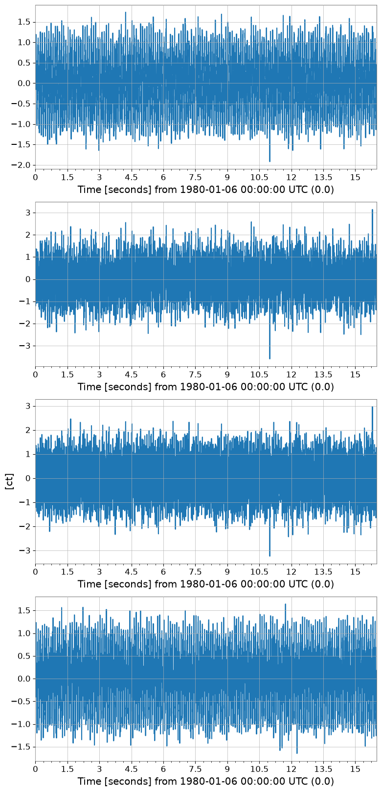
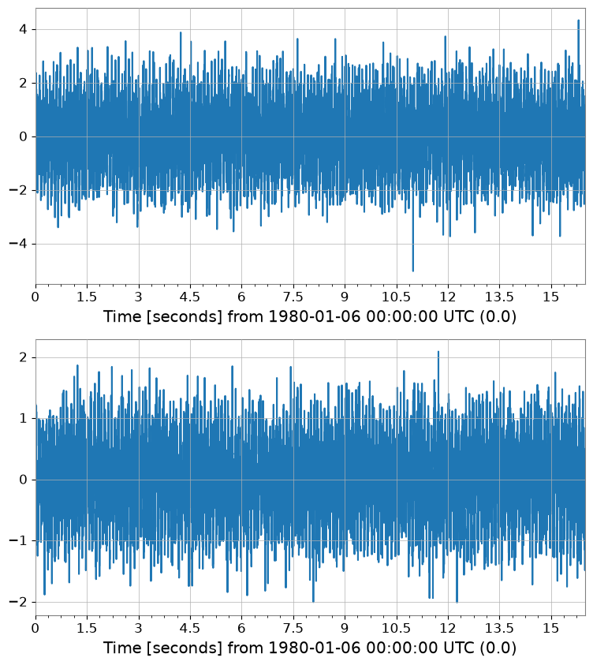
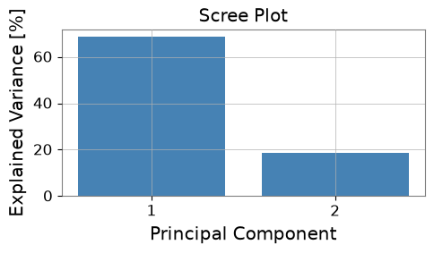
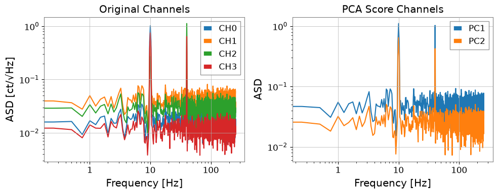
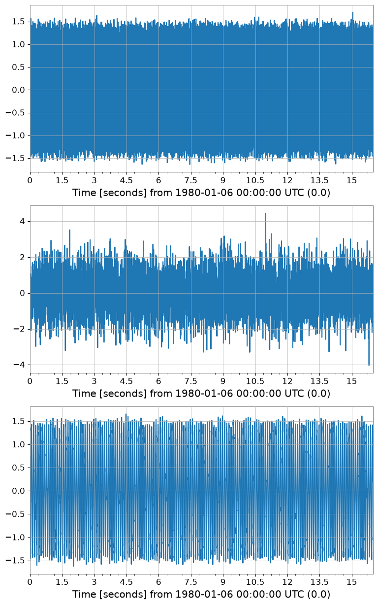
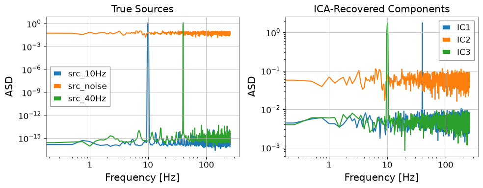

Note
このページは Jupyter Notebook から生成されました。 ノートブックをダウンロード (.ipynb)
[1]:
# Skipped in CI: Colab/bootstrap dependency install cell.
分解解析: PCA・ICA と固有モード

このチュートリアルでは TimeSeriesMatrix を使った 主成分分析（PCA） と 独立成分分析（ICA） を解説します。
どちらも tsm.pca() / tsm.ica() という高レベル API として利用可能で、内部では scikit-learn をラップしています。
代表的なユースケース:
PCA: 次元削減、相関センサーチャンネルの非相関化
ICA: 盲目信号分離（BSS）— 環境ノイズから物理信号を分離する
sklearn.decomposition.PCA / FastICA を直接使っていたコードは matrix.pca() / matrix.ica() に置き換えられます。[2]:
import warnings
warnings.filterwarnings("ignore", category=UserWarning)
warnings.filterwarnings("ignore", category=DeprecationWarning)
import matplotlib.pyplot as plt
import numpy as np
from astropy import units as u
from gwexpy.timeseries import TimeSeriesMatrix
1. マルチチャンネル合成データの準備
現実的なシナリオを再現します:
隠れた信号源 2本: 10 Hz サイン波とブロードバンドノイズ
観測チャンネル 4本: 信号源の線形混合
これは重力波検出器で複数のセンサーに物理信号が混合して現れる状況を模倣しています。
[3]:
rng = np.random.default_rng(42)
fs = 512 # sample rate [Hz]
T = 16.0 # duration [s]
n = int(fs * T)
t = np.arange(n) / fs
# Two independent source signals
src1 = np.sin(2 * np.pi * 10.0 * t) # 10 Hz tone
src2 = rng.normal(0, 1, n) # broadband noise
src3 = np.sin(2 * np.pi * 40.0 * t + 0.7) # 40 Hz tone
# Mixing matrix (4 observed channels from 3 sources)
A = np.array([
[0.8, 0.3, 0.1],
[0.4, 0.7, 0.2],
[0.2, 0.5, 0.9],
[0.6, -0.2, 0.5],
])
sources = np.stack([src1, src2, src3], axis=0) # (3, n)
mixed = A @ sources # (4, n)
# Add small instrument noise
mixed += 0.05 * rng.normal(0, 1, mixed.shape)
# Build TimeSeriesMatrix (4 channels × 1 col × n samples)
dt = (1 / fs) * u.s
t0 = 0 * u.s
data_3d = mixed[:, np.newaxis, :] # (4, 1, n)
tsm = TimeSeriesMatrix(
data_3d,
dt=dt,
t0=t0,
units=np.full((4, 1), u.ct),
)
tsm.channel_names = [f"CH{i}" for i in range(4)]
print("TimeSeriesMatrix shape:", tsm.shape) # (4, 1, 8192)
tsm.plot(subplots=True, xscale="seconds");
TimeSeriesMatrix shape: (4, 1, 8192)

2. PCA – 次元削減
TimeSeriesMatrix.pca() はスコア行列と、オプションで PCAResult オブジェクトを返します。
[4]:
# Fit PCA – keep 2 principal components out of 4 channels
pca_scores, pca_res = tsm.pca(n_components=2, return_model=True)
print("PCA score shape:", pca_scores.shape) # (2, 1, n)
print("Explained variance ratio:", pca_res.explained_variance_ratio)
pca_scores.plot(subplots=True, xscale="seconds");
PCA score shape: (2, 1, 8192)
Explained variance ratio: [0.68552389 0.18734173]

[5]:
# Visualize explained variance (scree plot)
fig, ax = plt.subplots(figsize=(5, 3))
evr = pca_res.explained_variance_ratio
ax.bar(range(1, len(evr) + 1), evr * 100, color="steelblue")
ax.set_xlabel("Principal Component")
ax.set_ylabel("Explained Variance [%]")
ax.set_title("Scree Plot")
ax.set_xticks(range(1, len(evr) + 1))
plt.tight_layout()

[6]:
# Compare ASD of original channels vs PC scores
fig, axes = plt.subplots(1, 2, figsize=(10, 4))
asd_orig = tsm.asd(fftlength=4, overlap=0.5)
for i in range(asd_orig.shape[0]):
axes[0].loglog(
asd_orig[i, 0].frequencies.value,
asd_orig[i, 0].value,
label=f"CH{i}",
)
axes[0].set_xlabel("Frequency [Hz]")
axes[0].set_ylabel("ASD [ct/√Hz]")
axes[0].set_title("Original Channels")
axes[0].legend()
asd_pca = pca_scores.asd(fftlength=4, overlap=0.5)
for i in range(asd_pca.shape[0]):
axes[1].loglog(
asd_pca[i, 0].frequencies.value,
asd_pca[i, 0].value,
label=f"PC{i+1}",
)
axes[1].set_xlabel("Frequency [Hz]")
axes[1].set_ylabel("ASD")
axes[1].set_title("PCA Score Channels")
axes[1].legend()
plt.tight_layout()

3. ICA – 盲目信号分離
TimeSeriesMatrix.ica() は FastICA を実行し、独立成分行列を返します。
[7]:
# Fit ICA – recover 3 independent components
ica_sources = tsm.ica(n_components=3, random_state=0)
print("ICA source shape:", ica_sources.shape) # (3, 1, n)
ica_sources.plot(subplots=True, xscale="seconds");
ICA source shape: (3, 1, 8192)

[8]:
# Compare ICA sources vs. known sources in frequency domain
fig, axes = plt.subplots(1, 2, figsize=(10, 4))
# True sources (for reference)
src_3d = np.stack([src1, src2, src3], axis=0)[:, np.newaxis, :] # (3,1,n)
tsm_src = TimeSeriesMatrix(src_3d, dt=dt, t0=t0)
tsm_src.channel_names = ["src_10Hz", "src_noise", "src_40Hz"]
asd_src = tsm_src.asd(fftlength=4, overlap=0.5)
for i in range(3):
axes[0].loglog(
asd_src[i, 0].frequencies.value,
asd_src[i, 0].value,
label=tsm_src.channel_names[i],
)
axes[0].set_title("True Sources")
axes[0].set_xlabel("Frequency [Hz]")
axes[0].set_ylabel("ASD")
axes[0].legend()
asd_ica = ica_sources.asd(fftlength=4, overlap=0.5)
for i in range(asd_ica.shape[0]):
axes[1].loglog(
asd_ica[i, 0].frequencies.value,
asd_ica[i, 0].value,
label=f"IC{i+1}",
)
axes[1].set_title("ICA-Recovered Components")
axes[1].set_xlabel("Frequency [Hz]")
axes[1].set_ylabel("ASD")
axes[1].legend()
plt.tight_layout()

4. 前処理：標準化とホワイトニング
ICA・PCA にはスケーリングが重要です。TimeSeriesMatrix には組み込み前処理が備わっています:
メソッド |
説明 |
|---|---|
|
各チャンネルを平均 0、分散 1 に正規化 |
|
外れ値に強い中央値/MAD スケーリング |
|
PCA ホワイトニング（チャンネル間相関の除去） |
pca() / ica() には scale パラメータで内部適用も可能です。
[9]:
# Manual preprocessing pipeline
tsm_z = tsm.standardize(method='zscore')
print("Mean ≈ 0:", np.allclose(tsm_z.value.mean(axis=-1), 0, atol=1e-10))
print("Std ≈ 1:", np.allclose(tsm_z.value.std(axis=-1), 1, atol=0.01))
# ICA with internal z-score scaling
ica_scaled = tsm.ica(n_components=3, scale='zscore', random_state=0)
print("ICA (with zscore) shape:", ica_scaled.shape)
# PCA with robust scaling
pca_robust, pca_res2 = tsm.pca(n_components=2, scale='robust', return_model=True)
print("PCA (robust) EVR:", pca_res2.explained_variance_ratio)
Mean ≈ 0: True
Std ≈ 1: True
ICA (with zscore) shape: (3, 1, 8192)
PCA (robust) EVR: [0.44248267 0.37626797]
5. 欠損値 (NaN) の取り扱い
実際のデータには観測ギャップがある場合があります。nan_policy='impute' で分解前に補完できます。
[10]:
# Inject some NaN gaps (simulating data gaps)
tsm_nan = tsm.copy()
tsm_nan.value[0, 0, 100:120] = np.nan
tsm_nan.value[2, 0, 500:510] = np.nan
print("NaN count:", np.sum(np.isnan(tsm_nan.value)))
# PCA with linear interpolation of NaN gaps
pca_nanfill, _ = tsm_nan.pca(
n_components=2,
nan_policy='impute',
impute_kwargs={'method': 'interpolate'},
return_model=True,
)
print("PCA (nan impute) shape:", pca_nanfill.shape)
NaN count: 30
PCA (nan impute) shape: (2, 1, 8192)
6. scikit-learn からの移行ガイド
移行前（scikit-learn 直接使用）:
from sklearn.decomposition import PCA, FastICA
import numpy as np
# 生の numpy 配列 (n_samples, n_channels)
X = data.reshape(n_channels, n_samples).T
pca = PCA(n_components=2)
scores = pca.fit_transform(X) # (n_samples, 2)
ica = FastICA(n_components=3, random_state=0)
sources = ica.fit_transform(X) # (n_samples, 3)
移行後（gwexpy）:
# dt/t0/unit を保持したまま処理
pca_scores, pca_res = tsm.pca(n_components=2, return_model=True)
ica_sources = tsm.ica(n_components=3, random_state=0)
gwexpy API が自動で行うこと:
時間軸（
dt、t0、times）を出力行列に引き継ぎ単位メタデータを保持
.plot()で直接プロット可能NaN 処理・スケーリングを内部で処理
まとめ
メソッド |
主要パラメータ |
返り値 |
|---|---|---|
|
|
|
|
|
|
どちらのメソッドも TimeSeriesMatrix を返すので、.plot(), .asd(), .coherence() などの後続操作がそのまま使えます。
関連チュートリアル: